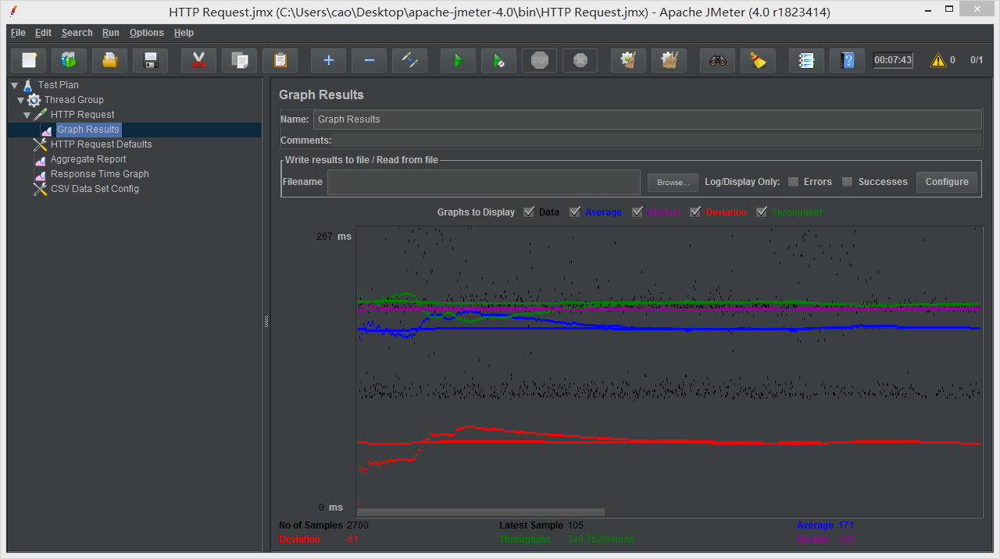
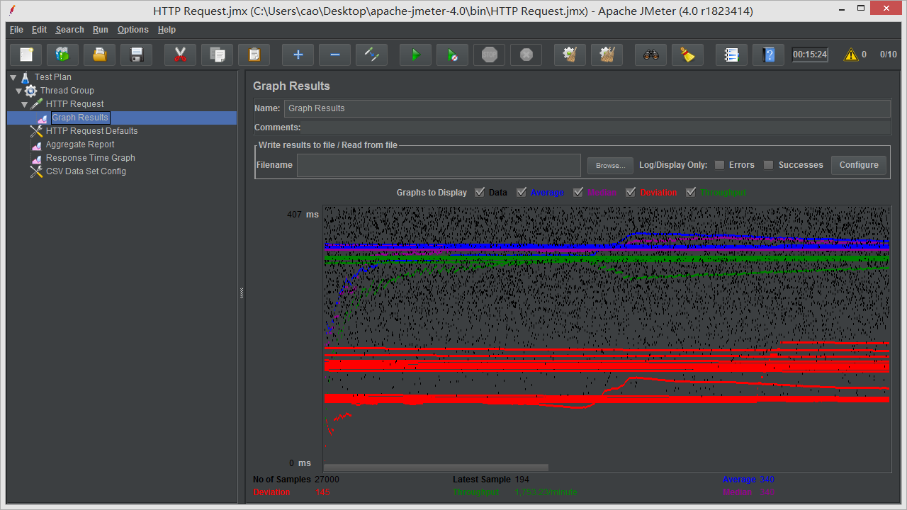
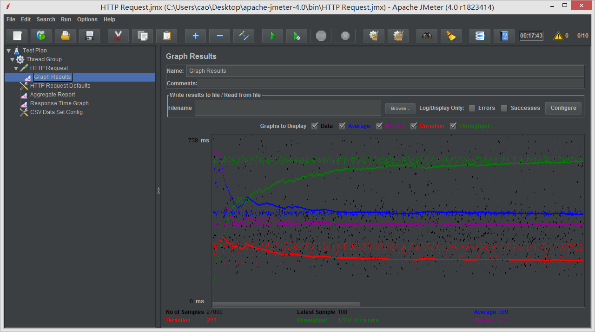
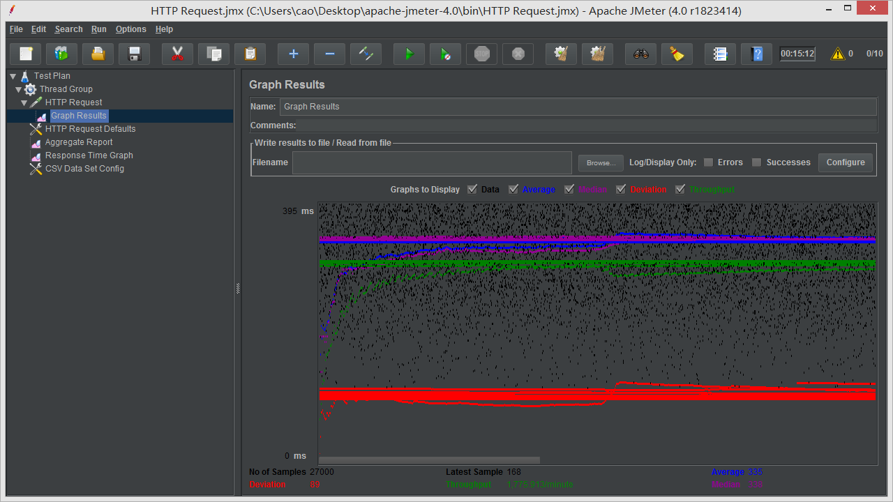
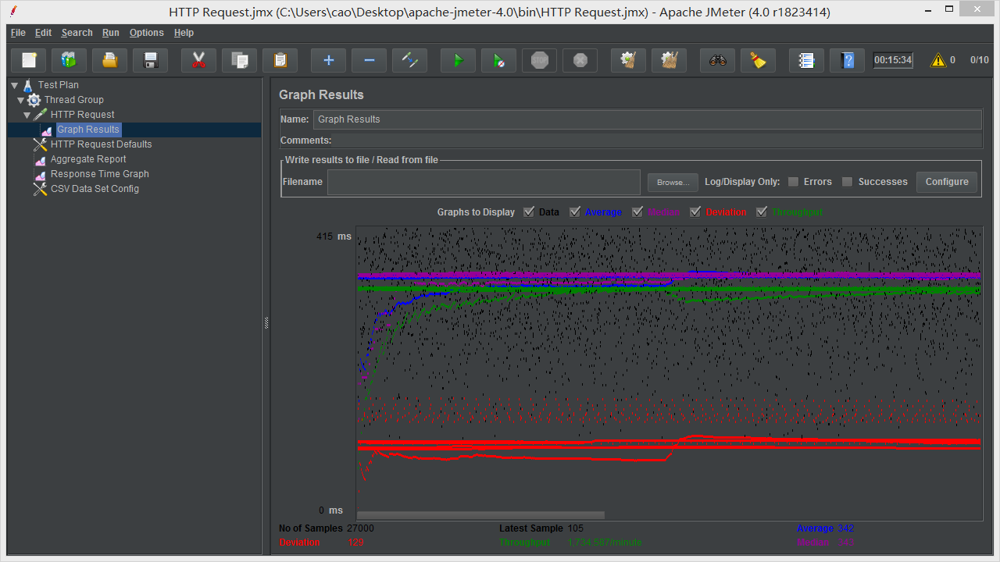
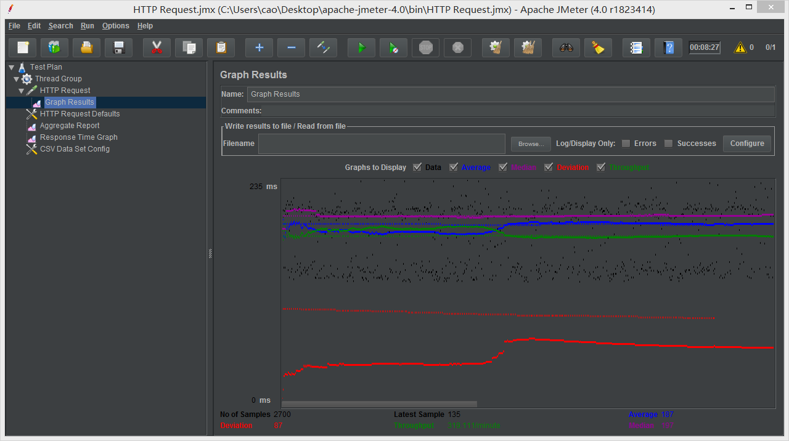
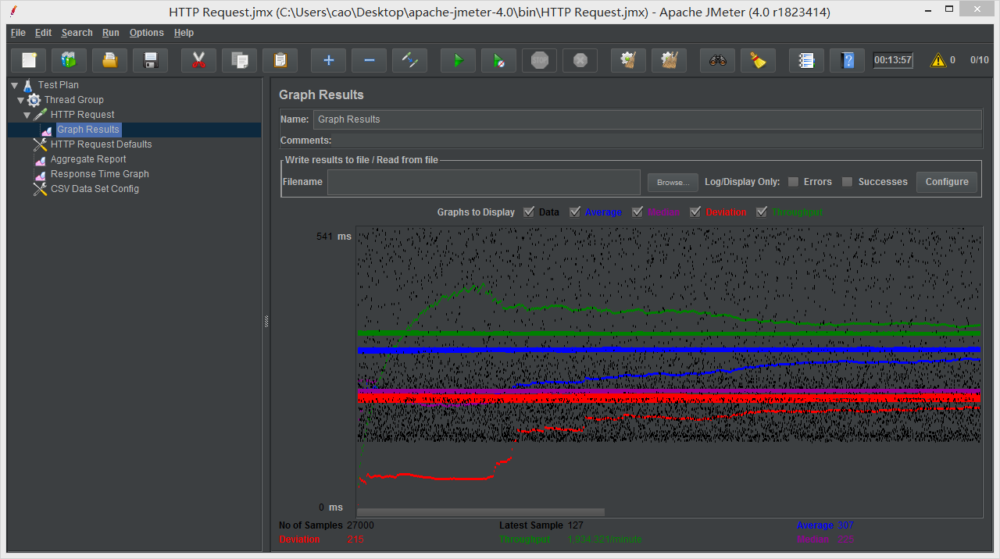
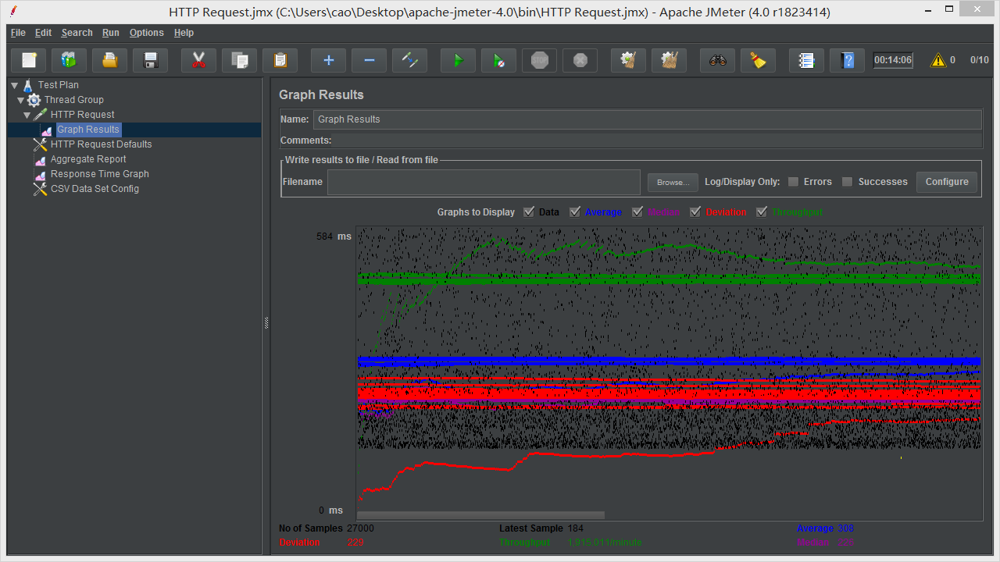
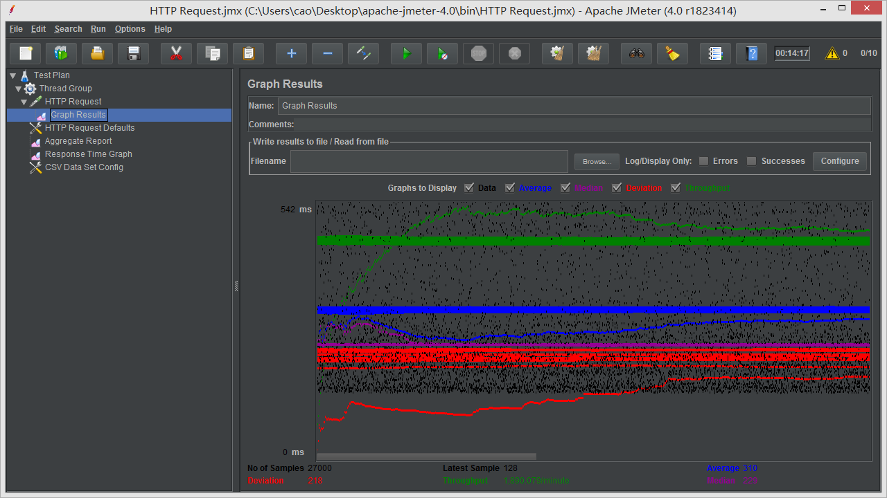

| Single-instance version cases | Graph Results Screenshot | Average Query Time(ms) | Average Search Servlet Time(ms) | Average JDBC Time(ms) | Analysis |
| Case 1: HTTP/1 thread |  | 171 | 32.190477 | 32.143719 | -- |
| Case 2: HTTP/10 threads |  | 340 | 196.047601 | 196.020590 | -- |
| Case 3: HTTPS/10 threads |  | 389 | 171.824731 | 171.795114 | -- |
| Case 4: HTTP/10 threads/No prepared statements |  | 335 | 197.392160 | 197.364958 | -- |
| Case 5: HTTP/10 threads/No connection pooling |  | 342 | 197.317984 | 197.277466 | -- |
| Scaled version cases | Graph Results Screenshot | Average Query Time(ms) | Average Search Servlet Time(ms) | Average JDBC Time(ms) | Analysis |
| Case 1: HTTP/1 thread |  | 187 | 32.324639 | 32.274617 | -- |
| Case 2: HTTP/10 threads |  | 307 | 45.906796 | 45.873730 | -- |
| Case 3: HTTP/10 threads/No prepared statements |  | 308 | 48.343770 | 48.307521 | -- |
| Case 4: HTTP/10 threads/No connection pooling |  | 310 | 51.855061 | 51.798002 | -- |